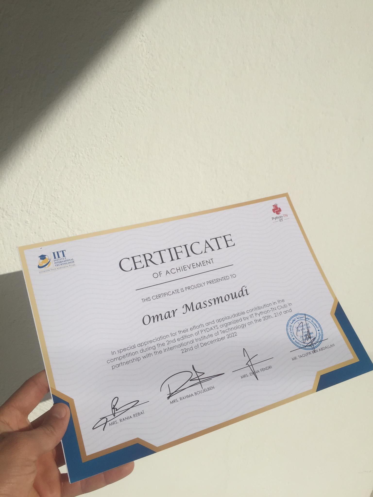

Here we present my Projects during my acadamic & professional background
Here is my end-of-study project for the bachelor's degree cycle in computer science, software engineering and information systems,
carried out within the company Acteol during four months, 14 February 2022 to 15 June 2022.
My project is to develop an application that helps companies and digital agencies to schedule and publish organic posts
on Facebook and Instagram.
With direct API integration across Facebook, digital agencies can schedule multiple social posts
across different profiles, which allows them to save time.
Technology :
Facebook Graph API, .NET Core, Entity Framework, MVC, JavaScript, JQuery, CSS, SQLserver
Because to my enthusiasm, ambition, and passion for invention, I've been able to create a number of personal projects using various technologies, frameworks, and databases. So, in this area, I will present my own projects that I worked on while studying.
Indeed, a good engineer must have specific talents in addition to academic and technical knowledge, such as communication, sales force, argumentation, and management (team, time, crisis, etc.). Some of these abilities can be found outside of the classroom. Clubs, groups, and associations all play an important role in the development of these talents. They provide numerous challenges that encourage pupils to venture outside of their comfort zone and discover new frontiers.
Wednesday the 21st of December 2022, I took part in the Machine Learning competition during the 2nd edition of PYDAYS organized by IIT Python-TN Club in partnership with the International Institute of Technology. It's been a thrilling journey, and it's been an honor to be a part of this family.
